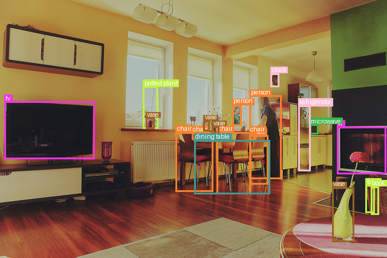
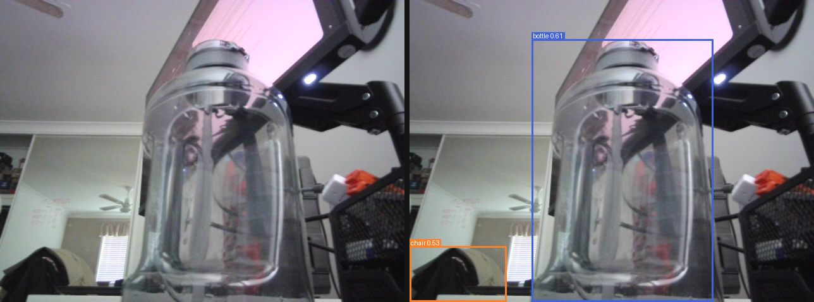

Everything to know about finding and localising objects in an image: the two-stage / one-stage / set-prediction progression, the mid-2026 model landscape, the COCO mAP protocol, and runnable code to test the leading open models.
Author
Benedict Thekkel
1. What is Object Detection?
Object detection maps an image to a set of objects, each with a class and a bounding box. It is the task that sits between classification (“is there a cat?”) and segmentation (“which pixels are cat?”): what is here, how many, and where.
Input. A single RGB image, (H, W, 3) uint8. Detectors resize to a fixed shorter side (DETR: 800px) or a square (RT-DETR / D-FINE / RF-DETR: 640x640), normalise with ImageNet statistics, and feed a CNN or ViT backbone. Nothing about the pipeline is autoregressive, so a detector is one forward pass per image.
Output. A variable-length list of triples (class_label, confidence, box). Boxes come in three conventions and mixing them up is the single most common bug in this task:
Convention
Format
Used by
xyxy (Pascal VOC)
(x_min, y_min, x_max, y_max), absolute pixels
what post_process_object_detection returns
xywh (COCO)
(x_min, y_min, width, height), absolute pixels
the COCO JSON annotation file
cxcywh (normalised)
(cx, cy, w, h) in [0, 1]
what a DETR-family model’s pred_boxes head emits
This notebook is about closed-vocabulary detection: the class list is fixed at training time (80 COCO classes here), and the model can never emit anything else.
Neighbouring tasks:
Task
What it does
Typical tool / notebook
Image classification
One label for the whole image
see 01_Image_Classification
Open-vocabulary detection
Boxes for arbitrary text prompts, no retraining
OWLv2, Grounding DINO; see 13_Zero_Shot_Object_Detection
Instance segmentation
Boxes plus a pixel mask per object
Mask2Former, RF-DETR-Seg; see 03_Image_Segmentation
Promptable segmentation
Mask from a point/box prompt, class-agnostic
SAM; see 12_Mask_Generation
Keypoint detection
Joint locations inside each box
see 17_Keypoint_Detection
Multi-object tracking
Detection + identity across video frames
ByteTrack, BoT-SORT (a detector plus an association step)
If your class list is known and fixed and you have (or can label) data, a closed-vocabulary detector is faster, smaller and more accurate than an open-vocabulary one. If the classes change at runtime, go to 13_Zero_Shot_Object_Detection.
2. Real-World Use Cases
Detection is the workhorse of applied computer vision - almost every production CV system has a detector somewhere in it - and the constraint that decides the model is almost never “highest COCO mAP”.
Use case
Domain
Consumes / produces
Dominant constraint
Forward-collision and lane-keeping
Automotive (Tesla Autopilot, Mobileye EyeQ)
Multi-camera video -> boxes for vehicles, pedestrians, cyclists
Hard real-time (<30 ms) on an embedded SoC; recall on small/far objects; zero-tolerance for missed pedestrians
Cashierless retail and shelf audit
Retail (Amazon Just Walk Out, Trax)
Ceiling/shelf cameras -> product boxes and counts
Hundreds of fine-grained SKU classes; heavy occlusion; cost per store
Defect detection on the line
Manufacturing
Line-scan images -> boxes on scratches, voids, solder bridges
Tiny objects; extreme class imbalance; a false negative ships a bad part
Lesion and nodule detection
Healthcare (CT/mammography CAD)
Volumetric or 2-D scans -> candidate lesion boxes
Recall over precision; regulatory validation; small, low-contrast objects
Drone and satellite survey
Aerial / defence / agriculture
Overhead imagery -> boxes on vehicles, buildings, crop damage
Very small objects in huge images (tiling); domain shift from COCO is total
PPE / safety compliance
Industrial safety
CCTV -> boxes for helmet, vest, person
Runs on cheap edge boxes; 24/7 uptime; privacy (on-prem)
Document layout parsing
Document AI (Docling, Textract)
Page images -> boxes for table, figure, heading
Throughput per page; a detector is the first stage of the OCR pipeline
Sports analytics
Media (Hawk-Eye, Second Spectrum)
Broadcast video -> player/ball boxes, then tracking
Small fast-moving ball; frame-rate-locked latency; identity stability
What the COCO number hides. A model that leads the COCO leaderboard has been tuned on 80 everyday classes photographed by tourists. Nothing about that predicts performance on X-ray, thermal, aerial or microscope imagery, which is exactly why the RF100-VL benchmark (100 real-world datasets, 164k images, NeurIPS 2025) exists and why models re-rank badly on it - Grounding DINO scores 49.2 mAP on ODinW-13 but only ~16 mAP on RF100-VL. In production the number that matters is mAP after fine-tuning on a few hundred of your own labels, and how quickly the model gets there.
The failure modes that actually hurt are not “1 point of mAP”: small objects (COCO AP_small is typically half of AP_large - a distant pedestrian or a 6-pixel defect is where detectors die), crowded scenes where NMS deletes a true positive that overlapped a stronger one, duplicate boxes when the NMS IoU threshold is mistuned, domain shift at dusk / in rain / on a new camera, and a confidence threshold picked on a validation set that no longer matches the deployed distribution. Latency is also not a single number: end-to-end you pay decode + resize + normalise + forward + post-process, and on a well-optimised YOLO the NMS can be a third of the budget - which is exactly the pressure that produced the NMS-free models below.
3. How Modern Object Detection Works
Six generations, all still alive somewhere:
Two-stage, region proposals (R-CNN 2013 -> Fast R-CNN 2015 -> Faster R-CNN 2015 -> FPN 2017). Stage 1 proposes candidate regions (selective search, then a learned Region Proposal Network); stage 2 classifies and refines each proposal with RoIPool/RoIAlign. Accurate, slow, and the source of most of the vocabulary (anchors, IoU assignment, NMS). Mask R-CNN (2017) bolts a mask head on the same design.
One-stage anchor-based (SSD 2015, YOLOv1-v3 2016-2018, RetinaNet 2017). Skip the proposal stage: densely predict class + box offset at every anchor on every feature-map cell. Fast, but tens of thousands of anchors are background, so training drowns in easy negatives. RetinaNet’s focal loss fixed that by down-weighting easy examples - FL(p) = -alpha (1-p)^gamma log(p) - and made one-stage detectors competitive with two-stage ones.
Anchor-free dense prediction (FCOS 2019, CenterNet 2019, YOLOX 2021). Drop the hand-tuned anchor boxes entirely and regress the box directly from each location (FCOS: distances to the four sides; CenterNet: a heatmap peak plus width/height). Fewer hyperparameters, same speed, same accuracy. Every modern YOLO is anchor-free.
Set prediction with transformers (DETR 2020). The conceptual break. DETR emits a fixed set of N=100 queries and matches them to ground truth with the Hungarian algorithm (one-to-one bipartite matching on a class + L1 + GIoU cost), so duplicate predictions are penalised during training instead of being deleted afterwards. That removes anchors and NMS and makes the model end-to-end. Price: 500 epochs to converge, and terrible AP_small (global attention on one low-res feature map).
Fixing DETR (2021-2023).Deformable DETR (2021) replaces dense attention with sparse deformable attention over multi-scale features - 10x faster convergence and much better small objects; Conditional DETR and DAB-DETR make the query a spatial prior; DN-DETR / DINO (2022) add denoising queries; DINO takes DETR past 60 AP but not in real time.
Real-time transformers, 2023-2026 - and they finally beat YOLO.RT-DETR (Baidu, 2023) built the first DETR that outruns YOLO on the speed/accuracy Pareto front (R50: 53.1 AP), with an efficient hybrid encoder and IoU-aware query selection; RT-DETRv2 (2024) adds a bag-of-freebies (R18 48.1, R50 53.4 AP); D-FINE (2024) re-poses box regression as fine-grained distribution refinement - predict a probability distribution over corner offsets instead of four scalars - hitting 54.0 / 55.8 AP (L/X) at 124 / 78 FPS on a T4, and 57.1 / 59.3 with Objects365 pretraining; DEIMv2 (2025) swaps in a DINOv3 backbone for 57.8 AP at 50M params, and a 1.5M “Pico” that matches YOLOv10-Nano; RF-DETR (Roboflow, ICLR 2026) runs neural architecture search over a DINOv2-backbone DETR and takes the crown - nano at 48.0 AP beats D-FINE-nano by 5.3 AP at the same latency, and the 2XL is the first real-time detector past 60 AP on COCO, plus 60.6 mAP on RF100-VL. RT-DETRv4 (late 2025) continues the Baidu line.
The key conceptual divide: NMS vs set prediction.
NMS (dense detectors). The model deliberately fires many overlapping boxes per object; at inference you sort by confidence and greedily delete any box with IoU > nms_iou against a kept one. Two extra knobs (conf_threshold, nms_iou) that must be tuned per deployment, a genuine latency cost that grows with the number of boxes, and a hard failure mode: in a crowd, NMS suppresses a true positive that legitimately overlaps its neighbour.
Set prediction (DETR family). One-to-one Hungarian matching in the loss teaches the model to emit exactly one box per object, so inference is sigmoid -> top-k -> threshold. No NMS, no IoU knob, constant post-processing cost, graceful behaviour in crowds. This is why every 2026 real-time SOTA model is NMS-free - and why YOLO26 has now adopted end-to-end NMS-free inference too.
Trade-off cheat sheet:
Generation
Example
COCO AP
Speed
NMS?
Notes
Two-stage
Faster R-CNN R50-FPN
~40
slow
yes
legacy; still a strong fine-tuning baseline
One-stage anchor
RetinaNet, SSD
~36-40
fast
yes
focal loss; historic
Anchor-free dense
FCOS, YOLOX, YOLO26
40-56
fastest
yes/optional
the practical industry default (see licensing below)
Set prediction
DETR-R50
42.0
slow
no
elegant, slow to train, weak on small objects
Deformable set pred.
Deformable DETR
46.2
medium
no
multi-scale + sparse attention
Real-time transformer
RT-DETRv2, D-FINE, DEIMv2, RF-DETR
48-60+
fast
no
the 2026 Pareto front
4. Evaluation Metrics
Intersection over Union (IoU) is the primitive everything is built on - the overlap between a predicted box \(B_p\) and a ground-truth box \(B_g\):
A prediction is a true positive if it has the right class and IoU with an unmatched ground-truth box above a threshold; otherwise it is a false positive. Unmatched ground-truth boxes are false negatives. Note the unmatched part: greedy one-to-one assignment in confidence order, so a second box on the same object is a duplicate, not a second TP.
Average Precision (AP) summarises the precision/recall curve you get by sweeping the confidence threshold from 1 down to 0:
\[P = \frac{TP}{TP + FP} \qquad R = \frac{TP}{TP + FN} \qquad AP = \int_0^1 p_{interp}(r)\, dr\]
where \(p_{interp}(r) = \max_{r' \ge r} p(r')\) (precision is made monotonically non-increasing, so a wiggly curve does not inflate the score).
The COCO mAP protocol - the number every paper reports as “AP” or “mAP” - is a specific recipe:
101-point interpolation: sample \(p_{interp}\) at recall \(0, 0.01, \ldots, 1.00\) and average (a discretisation of the integral above).
AP@[.50:.95]: recompute AP at ten IoU thresholds from 0.50 to 0.95 in steps of 0.05 and average them. This is the headline number, and it rewards localisation quality, not just detection - a box at IoU 0.55 contributes to AP@.50 but not AP@.75.
mean over classes: AP is computed per class, then averaged over the 80 classes (classes with no ground truth are skipped).
Reported alongside: AP50 (the lenient Pascal-VOC-style number, typically ~15 points higher), AP75 (strict), and AP_small / AP_medium / AP_large for objects under 32^2 / 322-962 / over 96^2 pixels. Detections are capped at 100 per image.
Pitfalls.
mAP hides everything that matters. It is an average over 80 classes and 10 IoU thresholds: a model can lose 20 points on toaster and gain them on person and score the same. Always look at AP_small (usually roughly half of AP_large - and where your real application probably lives) and the per-class table.
AP integrates over all confidences, so evaluate with a low score threshold (0.001-0.05), keeping the whole ranked list. Thresholding at 0.5 before computing AP silently truncates the recall axis and understates your model. The 0.5 you ship with is a deployment choice made from the P/R curve, not an evaluation choice.
The NMS IoU knob moves the number too. Too low and you delete real objects in crowds; too high and duplicates survive as false positives. NMS-free models have neither knob - one fewer thing to tune, one fewer thing to get wrong.
Label vocabularies differ between checkpoints. DETR emits the 91-entry COCO id list (with gaps and the name sofa); RT-DETR / D-FINE / RF-DETR emit contiguous 80-class ids (name couch). Compare by normalised class name, never by integer id.
Speed metrics. Report end-to-end latency per image in ms (preprocess + forward + post-process, after a warm-up pass) and FPS, always with the hardware, batch size, input resolution and precision attached. A “1.5 ms” model on an A100 at fp16 with TensorRT is not a 1.5 ms model in your Python loop.
The cell below implements IoU and a single-class AP from scratch on fabricated boxes - the same two functions are reused for the real mAP in the benchmark.
import numpy as npdef iou_matrix(a, b):"Pairwise IoU between boxes a (N,4) and b (M,4), both xyxy -> (N,M)." a, b = np.asarray(a, dtype=np.float64), np.asarray(b, dtype=np.float64)iflen(a) ==0orlen(b) ==0:return np.zeros((len(a), len(b))) lt = np.maximum(a[:, None, :2], b[None, :, :2]) # top-left of the intersection rb = np.minimum(a[:, None, 2:], b[None, :, 2:]) # bottom-right of the intersection inter = np.clip(rb - lt, 0, None).prod(axis=2) area_a = (a[:, 2] - a[:, 0]) * (a[:, 3] - a[:, 1]) area_b = (b[:, 2] - b[:, 0]) * (b[:, 3] - b[:, 1]) union = area_a[:, None] + area_b[None, :] - interreturn inter / np.maximum(union, 1e-9)def ap_101(tp, fp, n_gt):"COCO-style 101-point interpolated AP from TP/FP flags sorted by descending score."if n_gt ==0orlen(tp) ==0:return0.0 tp_cum, fp_cum = np.cumsum(tp), np.cumsum(fp) recall = tp_cum / n_gt precision = tp_cum / np.maximum(tp_cum + fp_cum, 1e-9) precision = np.maximum.accumulate(precision[::-1])[::-1] # monotonically non-increasing rec_thrs = np.linspace(0, 1, 101) idx = np.searchsorted(recall, rec_thrs, side="left") q = np.where(idx <len(precision), precision[np.minimum(idx, len(precision) -1)], 0.0)returnfloat(q.mean())# Toy example: one class, 3 ground-truth boxes, 4 predictions (xyxy).gt = np.array([[10, 10, 60, 60], [70, 20, 120, 80], [30, 90, 90, 150]], dtype=float)pred = np.array([[12, 12, 58, 63], [75, 25, 118, 78], [200, 200, 240, 250], [28, 95, 85, 145]], dtype=float)scores = np.array([0.90, 0.75, 0.60, 0.40])ious = iou_matrix(pred, gt)print("IoU matrix (pred x gt):\n", np.round(ious, 3))for thr in (0.5, 0.75): order = np.argsort(-scores) # greedy, highest confidence first used = np.zeros(len(gt), dtype=bool) tp, fp = np.zeros(len(pred)), np.zeros(len(pred))for rank, i inenumerate(order): best =int(ious[i].argmax())if ious[i, best] >= thr andnot used[best]: tp[rank], used[best] =1, Trueelse: fp[rank] =1print(f"IoU>={thr}: TP={int(tp.sum())} FP={int(fp.sum())} FN={int((~used).sum())} "f"AP={ap_101(tp, fp, len(gt)):.3f}")# Box 3 (200,200,240,250) overlaps nothing -> a false positive at every threshold.# Box 4 localises well enough for IoU 0.5 but not 0.75 -> the strict threshold is what AP@[.50:.95] rewards.
Gating. COCO, VOC, LVIS and Open Images are free to download without an account. Objects365, BDD100K, nuScenes and most medical sets require registration and/or a non-commercial research agreement - check before you build a product on a checkpoint pretrained on them.
This notebook evaluates on a 24-image slice of COCO val2017, streamed from detection-datasets/coco (a parquet mirror with image, width, height and objects.{bbox, category, area}; boxes are already xyxy absolute pixels and categories are the contiguous 80-class ids, which is exactly what we need). Streaming means we pull a few MB, not the 800 MB val shard - the whole notebook fits comfortably in 12 GB of RAM.
The convergence fixes, still useful as fine-tuning baselines. 46.2 AP (Deformable)
YOLOS (tiny/small/base)
6-127M
Apache 2.0
80 COCO
Plain ViT, no CNN, no anchors, sequence-to-sequence detection
A research statement (“a ViT can detect”), Apache-licensed, transformers-native. Only ~36 AP
Grounding DINO / OWLv2
170M-1B
Apache 2.0
open vocabulary
Text-conditioned DETR / CLIP-style
Detecting classes you never trained on - see 13_Zero_Shot_Object_Detection
Who wins what.Accuracy: RF-DETR-2XL (>60 AP), then DEIMv2-X. Speed at a given accuracy: the whole RT-DETR / D-FINE / DEIMv2 / RF-DETR real-time-transformer front - RF-DETR-nano dominates D-FINE-nano by 5.3 AP at equal latency. Size: DEIMv2-Pico at 1.5M params / 38.5 AP is the best thing that fits on a microcontroller-class device. Ecosystem: Ultralytics, by a mile, and it is not close.
Tie this back to section 2: automotive and safety want the real-time front (RT-DETRv2 or RF-DETR-small, exported to TensorRT); manufacturing defects and drone survey want whatever fine-tunes best from a few hundred labels under domain shift, which is RF-DETR (that is precisely what the RF100-VL numbers measure); document AI already ships D-FINE and RT-DETRv2 derivatives (docling-project/docling-layout-heron is an RT-DETRv2, docling-layout-egret is a D-FINE).
The YOLO / AGPL trap. Ultralytics YOLO (v8, v11, YOLO26) is the most-deployed detector in the world and probably the strongest practical baseline you can fine-tune in an afternoon. But: it is AGPL-3.0, and the AGPL’s network clause means that if you serve YOLO predictions over a network, you must offer the complete corresponding source of your service under AGPL - or buy an Enterprise license. Plenty of teams discover this after shipping. It also requires the vendor ultralytics package, so it deliberately appears nowhere in a runnable cell in this notebook (repo rule: general-purpose libraries only). The good news is that in 2026 you no longer trade accuracy for a clean license: RT-DETRv2, D-FINE, DEIMv2 and RF-DETR are all Apache 2.0, all transformers-native, and all at or above YOLO on the Pareto front.
Nothing in this table is too big for a 12 GB card - detectors are small (the largest row here is ~130M params, ~0.26 GB in fp16). Detection is bounded by latency and image resolution, not by VRAM; the 12 GB budget only starts to bite when you train at 640x640 with a large batch.
7. Setup
Everything below runs on a single modest GPU (an RTX 3060, 12 GB) or on CPU, and every model loads through Hugging Face transformers - no ultralytics, mmdetection or detectron2. Package roles:
transformers (>=5.13) + torch - all five detectors (DETR, YOLOS, RT-DETRv2, D-FINE, RF-DETR)
accelerate - device placement
datasets - the streamed COCO val slice with ground-truth boxes
numpy - our IoU / AP implementation (no pycocotools needed for a 24-image smoke test)
pillow - drawing predicted boxes on the image (ImageDraw); ECharts is JS and cannot render an image
RF-DETR and D-FINE became transformers-native in the 5.x line; earlier releases needed the vendor rfdetr / D-FINE repos, which this notebook does not depend on.
All downloads (the sample image, the HF dataset and model cache) land in DL_tasks/datasets/, which is gitignored.
# Every model here is transformers-native - no ultralytics/mmdetection/detectron2.# %pip install -q torch transformers datasets accelerate pillow numpy pandas pyecharts# Optional extra for the webcam demo (section 13)# %pip install -q opencv-python
import ctypesimport ctypes.utilimport gcimport timefrom pathlib import Pathimport torchfrom dotenv import find_dotenv, load_dotenv# Knowledge/.env sets HF_TOKEN - authenticated HF Hub requests get higher rate limitsload_dotenv(find_dotenv(usecwd=True))device ="cuda:0"if torch.cuda.is_available() else"cpu"dtype = torch.float16 if device !="cpu"else torch.float32if device !="cpu":print(torch.cuda.get_device_name(0))print("device:", device)def vram(tag=""):"Report current GPU memory (allocated / reserved). No-op on CPU."if torch.cuda.is_available(): alloc = torch.cuda.memory_allocated() /1e9 reserved = torch.cuda.memory_reserved() /1e9print(f"VRAM {tag:20s}{alloc:5.2f} GB allocated / {reserved:5.2f} GB reserved")def free_memory():"Collect garbage, empty the CUDA cache, and return freed CPU RAM to the OS." gc.collect()if torch.cuda.is_available(): torch.cuda.empty_cache() torch.cuda.ipc_collect()# glibc keeps freed CPU allocations in its arenas instead of returning them# to the OS, so RSS compounds across model sections (cpu-offloaded weights# live in system RAM). malloc_trim(0) hands the freed arenas back. See# dl-visualization-and-memory.instructions.md - not optional on a 12 GB box.try: ctypes.CDLL(ctypes.util.find_library("c") or"libc.so.6").malloc_trim(0)exceptException:pass# All downloads go to DL_tasks/datasets/ (gitignored)DATA_DIR = Path("../../datasets")DATA_DIR.mkdir(exist_ok=True)HF_CACHE =str(DATA_DIR /"hf_cache")
NVIDIA GeForce RTX 3060
device: cuda:0
import urllib.requestfrom itertools import islicefrom datasets import load_datasetfrom IPython.display import displayfrom PIL import Image, ImageDraw# The canonical COCO sample: two cats on a sofa with two remotes.SAMPLE = DATA_DIR /"coco_cats.jpg"ifnot SAMPLE.exists(): urllib.request.urlretrieve("http://images.cocodataset.org/val2017/000000039769.jpg", SAMPLE)image = Image.open(SAMPLE).convert("RGB")# --- label normalisation -------------------------------------------------# DETR/YOLOS carry the 91-entry COCO id list ("sofa", "tv"); RT-DETR/D-FINE/RF-DETR# carry contiguous 80-class ids ("couch"). Compare by normalised NAME, never by id.ALIASES = {"sofa": "couch", "tvmonitor": "tv", "aeroplane": "airplane","motorbike": "motorcycle", "diningtable": "dining table","pottedplant": "potted plant", "cellphone": "cell phone"}def norm_label(name):"Lower-case a class name and fold the known cross-checkpoint synonyms." name =str(name).lower().strip()return ALIASES.get(name, name)# --- the eval slice ------------------------------------------------------N_EVAL =24# a smoke test, not a leaderboard (see section 12)stream = load_dataset("detection-datasets/coco", split="val", streaming=True, cache_dir=HF_CACHE)cat_feat = stream.features["objects"]["category"]COCO80 = (cat_feat.feature ifhasattr(cat_feat, "feature") else cat_feat).namesEVAL = []for row in islice(stream, N_EVAL): # streaming -> we pull a few MB, not the 800 MB val shard objs = row["objects"] EVAL.append({"image": row["image"].convert("RGB"),"boxes": np.asarray(objs["bbox"], dtype=np.float32).reshape(-1, 4), # xyxy, absolute px"labels": [norm_label(COCO80[c]) for c in objs["category"]], })del streamfree_memory()print(f"{len(EVAL)} eval images, {sum(len(e['labels']) for e in EVAL)} ground-truth boxes")# --- drawing (PIL, not matplotlib - ECharts is for charts, PIL for images) ---PALETTE = ["#e6194b", "#3cb44b", "#4363d8", "#f58231", "#911eb4", "#42d4f4","#f032e6", "#bfef45", "#fabed4", "#469990", "#dcbeff", "#9a6324"]def draw_boxes(img, labels, boxes, scores=None, width=3):"Draw labelled boxes (xyxy) on a copy of a PIL image and return it." out = img.copy() d = ImageDraw.Draw(out)for i, (lab, box) inenumerate(zip(labels, boxes)): color = PALETTE[sum(map(ord, lab)) %len(PALETTE)] x0, y0, x1, y1 = (float(v) for v in box) d.rectangle([x0, y0, x1, y1], outline=color, width=width) text = lab if scores isNoneelsef"{lab}{float(scores[i]):.2f}" tx, ty = x0 +2, max(0.0, y0 -12) bg = d.textbbox((tx, ty), text) d.rectangle([bg[0] -2, bg[1] -1, bg[2] +2, bg[3] +1], fill=color) d.text((tx, ty), text, fill="white")return out# Ground truth of the first eval image - this is what the models are scored against.display(draw_boxes(EVAL[0]["image"], EVAL[0]["labels"], EVAL[0]["boxes"]))# --- inference helpers (used by every model section and by the benchmark) ---@torch.inference_mode()def predict(model, processor, images, threshold=0.5):"""Run a transformers detector over PIL images -> [{labels, scores, boxes}, ...]. Boxes come back xyxy in absolute pixels of the ORIGINAL image (that is what target_sizes buys you), and labels are normalised class-name strings, so outputs from any two checkpoints in this notebook are directly comparable. """ out = []for img in images: inputs = processor(images=img, return_tensors="pt").to(device=device, dtype=dtype) res = model(**inputs) post = processor.post_process_object_detection( res, target_sizes=[(img.height, img.width)], threshold=threshold )[0] out.append({"labels": [norm_label(model.config.id2label[i]) for i in post["labels"].tolist()],"scores": post["scores"].float().cpu().numpy(), # off the GPU before we free it"boxes": post["boxes"].float().cpu().numpy(), })return outdef show(pred, img, k=10):"Print the top-k detections and display the annotated image." order = np.argsort(-pred["scores"])[:k]for i in order:print(f" {pred['labels'][i]:<14s}{pred['scores'][i]:.3f} "f"{[round(float(v), 1) for v in pred['boxes'][i]]}") display(draw_boxes(img, [pred["labels"][i] for i in order], [pred["boxes"][i] for i in order], [pred["scores"][i] for i in order]))
24 eval images, 159 ground-truth boxes

8. DETR (the set-prediction original)
facebook/detr-resnet-50 (42M params, 42.0 AP) is the 2020 model that removed anchors and NMS: a ResNet-50 backbone, a 6+6-layer transformer encoder-decoder, 100 learned object queries, and a Hungarian-matched loss. It is not competitive on accuracy or speed any more, but it is the ancestor of every model in section 6’s top rows and the clearest thing to read.
Two DETR-specific quirks to know:
Its classification head is a softmax over 91 classes + a “no-object” class, so scores are high-confidence and the sensible display threshold is 0.9. The focal-loss models below (RT-DETR, D-FINE, RF-DETR) use independent sigmoids, so their scores are lower and calibrated differently - 0.3-0.5 is the right display threshold there. Do not copy a threshold across model families.
It is weak on small objects (one low-resolution feature map, global attention), which is exactly what Deformable DETR’s multi-scale sparse attention fixed.
from transformers import AutoImageProcessor, AutoModelForObjectDetectiondetr_id ="facebook/detr-resnet-50"detr_proc = AutoImageProcessor.from_pretrained(detr_id, cache_dir=HF_CACHE)detr = AutoModelForObjectDetection.from_pretrained( detr_id, cache_dir=HF_CACHE, dtype=dtype).to(device).eval()print(f"{sum(p.numel() for p in detr.parameters()) /1e6:.1f}M params, "f"{detr.config.num_queries} object queries, {len(detr.config.id2label)} class ids")vram("detr loaded")predict(detr, detr_proc, [image], threshold=0.9) # warm-up (CUDA autotune, kernel load)t0 = time.perf_counter()pred = predict(detr, detr_proc, [image], threshold=0.9)[0] # softmax head -> high thresholdprint(f"DETR-R50: {(time.perf_counter() - t0) *1000:.0f} ms, {len(pred['labels'])} detections")show(pred, image)del detr, detr_proc, predfree_memory()vram("after detr")
[transformers] DetrForObjectDetection LOAD REPORT from: facebook/detr-resnet-50
Key | Status | |
---------------------------------------------------------------+------------+--+-
model.backbone.model.layer1.0.downsample.1.num_batches_tracked | UNEXPECTED | |
model.backbone.model.layer4.0.downsample.1.num_batches_tracked | UNEXPECTED | |
model.backbone.model.layer3.0.downsample.1.num_batches_tracked | UNEXPECTED | |
model.backbone.model.layer2.0.downsample.1.num_batches_tracked | UNEXPECTED | |
Notes:
- UNEXPECTED: can be ignored when loading from different task/architecture; not ok if you expect identical arch.
VRAM after detr 0.01 GB allocated / 0.03 GB reserved
9. YOLOS (a plain ViT that detects)
hustvl/yolos-small (31M params, 36.1 AP) is the “You Only Look at One Sequence” model: a plain ViT with 100 detection tokens appended to the patch sequence, and nothing else - no CNN backbone, no FPN, no anchors, no NMS. It was a research statement (transfer a vanilla ViT to detection with minimal surgery) rather than a performance play, and its AP shows it.
It is here for two reasons: it is the clean demonstration that detection needs no convolutional inductive bias, and - despite the name - it is Apache 2.0 and transformers-native, unlike the Ultralytics YOLOs. Like DETR it uses a softmax head, so keep the threshold high.
VRAM after yolos 0.01 GB allocated / 0.03 GB reserved
10. RT-DETRv2 (the production default)
PekingU/rtdetr_v2_r18vd (20M params, 48.1 AP) - Baidu’s real-time DETR, the model that first beat YOLO on the speed/accuracy front while staying NMS-free. A hybrid encoder decouples intra-scale attention from cross-scale fusion (cheap), and IoU-aware query selection seeds the decoder with good proposals (fast convergence). v2 adds selective multi-scale sampling and a discrete sampling operator that replaces grid_sample, which is the reason it exports cleanly to ONNX/TensorRT - the practical difference between a paper and a deployment.
Pick it when you want a boring, mature, well-exported detector. Larger siblings: rtdetr_v2_r34vd, rtdetr_v2_r50vd (53.4 AP), rtdetr_v2_r101vd. Note the processor resizes to 640x640 - feeding other sizes degrades accuracy.
rtdetr_id ="PekingU/rtdetr_v2_r18vd"rtdetr_proc = AutoImageProcessor.from_pretrained(rtdetr_id, cache_dir=HF_CACHE)rtdetr = AutoModelForObjectDetection.from_pretrained( rtdetr_id, cache_dir=HF_CACHE, dtype=dtype).to(device).eval()print(f"{sum(p.numel() for p in rtdetr.parameters()) /1e6:.1f}M params, "f"{rtdetr.config.num_queries} queries, no NMS")predict(rtdetr, rtdetr_proc, [image], threshold=0.5) # warm-upt0 = time.perf_counter()pred = predict(rtdetr, rtdetr_proc, [image], threshold=0.5)[0] # sigmoid head -> lower thresholdprint(f"RT-DETRv2-R18: {(time.perf_counter() - t0) *1000:.0f} ms, {len(pred['labels'])} detections")show(pred, image)del rtdetr, rtdetr_proc, predfree_memory()vram("after rt-detr")
VRAM after rt-detr 0.01 GB allocated / 0.03 GB reserved
11. D-FINE (localisation specialist, tiny)
ustc-community/dfine-small-coco (10M params, 48.5 AP) beats the 20M RT-DETRv2-R18 with half the parameters. Its idea: stop regressing four scalar coordinates and instead predict a probability distribution over each box edge’s offset, refined iteratively across decoder layers (Fine-grained Distribution Refinement), with the sharper deep-layer distributions distilled back into the shallow layers (GO-LSD). Because it optimises where the edge probably is rather than a point estimate, it wins disproportionately at high IoU thresholds - which is exactly what AP@[.50:.95] rewards.
The family runs dfine-nano-coco (3.8M) to dfine-xlarge-coco (63M, 55.8 AP). Checkpoints suffixed -obj365 are Objects365-pretrained and -obj2coco are Objects365-pretrained then COCO-finetuned (D-FINE-L/X reach 57.1 / 59.3 AP that way) - a free 3 AP if you can spare the download.
VRAM after d-fine 0.01 GB allocated / 0.03 GB reserved
12. RF-DETR (the mid-2026 state of the art)
Roboflow/rf-detr-medium (34M params) - the ICLR 2026 model that currently leads the real-time Pareto front. A DINOv2-with-registers ViT backbone (windowed/full attention alternation), a C2f-style multi-scale projector, and a shallow deformable DETR decoder, with the whole configuration chosen by weight-sharing neural architecture search over the accuracy/latency frontier instead of by hand. Group-DETR training (parallel decoder copies) gives it fast convergence.
The NAS result is worth reading off the configs: nano / medium / large differ by input resolution (384 / 576 / 704) and decoder depth (2 / 4 / 4), not by channel width - which is why the whole family sits at ~30-34M params. Scaling a detector by resolution rather than by width is the opposite of the usual n/s/m/l/x recipe, and it is where the latency wins come from.
Why it matters beyond one more AP point: the DINOv2 backbone is a self-supervised foundation model, so RF-DETR transfers far better than a COCO-supervised CNN - it is the first real-time detector past 60 mAP on RF100-VL, the benchmark that simulates your actual dataset (X-ray, aerial, industrial) rather than tourist photos. That is what makes it the default when you plan to fine-tune. Family: rf-detr-nano (48.0 AP) through rf-detr-large, plus Roboflow/rf-detr-seg-medium for instance masks (see 03_Image_Segmentation). Apache 2.0.
VRAM after rf-detr 0.01 GB allocated / 0.03 GB reserved
13. Head-to-head Benchmark
All five detectors on the same 24 COCO val2017 images, the same ground truth, and the same metric - real COCO mAP@[.50:.95] (101-point interpolation, per class then averaged) computed with the iou_matrix / ap_101 functions from section 4, plus AP50 and end-to-end latency per image. Models are loaded, measured and freed one at a time, so VRAM returns to baseline between rows.
Two protocol details that matter:
We predict with a threshold of 0.05, not the 0.5 used for display. AP integrates over the whole ranked list; thresholding first would truncate the recall axis and understate every model.
Latency is wall-clock per image, batch size 1, fp16 on GPU, measured after a warm-up pass, and it includes preprocessing and post-processing. It is not the number the papers quote (those are TensorRT, often on a T4/A100), so read the ordering, not the absolute values.
This is a smoke test, not a leaderboard. 24 images out of 5000 gives a mAP with several points of noise, and rare classes appear zero or once. Published COCO numbers (DETR 42.0, YOLOS-S 36.1, RT-DETRv2-R18 48.1, D-FINE-S 48.5) are the ground truth; the point here is to see the shape of the ranking reproduce on your own hardware, and to see how much latency you pay for it.
def coco_map(preds, gts, iou_thrs=np.arange(0.5, 1.0, 0.05)):"""COCO mAP over a list of per-image predictions and ground truths. Averages 101-point AP over the given IoU thresholds, per class, then over the classes that actually appear in the ground truth. Matching is greedy in confidence order with one-to-one assignment (a second box on a matched object is a duplicate = false positive), exactly as pycocotools does it. """ classes =sorted({lab for g in gts for lab in g["labels"]}) aps = []for cls in classes: gt_boxes, n_gt = [], 0for g in gts: keep = [j for j, lab inenumerate(g["labels"]) if lab == cls] gt_boxes.append(g["boxes"][keep] if keep else np.zeros((0, 4), dtype=np.float32)) n_gt +=len(keep) dets = [(float(p["scores"][j]), i, p["boxes"][j])for i, p inenumerate(preds)for j, lab inenumerate(p["labels"]) if lab == cls]if n_gt ==0:continue dets.sort(key=lambda d: -d[0]) per_thr = []for thr in iou_thrs: used = [np.zeros(len(g), dtype=bool) for g in gt_boxes] tp, fp = np.zeros(len(dets)), np.zeros(len(dets))for k, (_, img_i, box) inenumerate(dets): g = gt_boxes[img_i]iflen(g) ==0: fp[k] =1continue ious = iou_matrix(box[None, :], g)[0] best =int(ious.argmax())if ious[best] >= thr andnot used[img_i][best]: tp[k], used[img_i][best] =1, Trueelse: fp[k] =1 per_thr.append(ap_101(tp, fp, n_gt)) aps.append(float(np.mean(per_thr)))returnfloat(np.mean(aps)) if aps else0.0# Sanity check: the ground truth scored against itself must be a perfect 1.0.perfect = [{"labels": e["labels"], "boxes": e["boxes"],"scores": np.ones(len(e["labels"]))} for e in EVAL]print("mAP of the ground truth against itself:", round(coco_map(perfect, EVAL), 4))del perfect
mAP of the ground truth against itself: 1.0
import pandas as pdMODELS = {"DETR-R50": "facebook/detr-resnet-50","YOLOS-small": "hustvl/yolos-small","RT-DETRv2-R18": "PekingU/rtdetr_v2_r18vd","D-FINE-S": "ustc-community/dfine-small-coco","RF-DETR-medium": "Roboflow/rf-detr-medium",}results = {}images = [e["image"] for e in EVAL]for name, model_id in MODELS.items(): proc = AutoImageProcessor.from_pretrained(model_id, cache_dir=HF_CACHE) model = AutoModelForObjectDetection.from_pretrained( model_id, cache_dir=HF_CACHE, dtype=dtype ).to(device).eval() n_params =sum(p.numel() for p in model.parameters()) /1e6 predict(model, proc, images[:1], threshold=0.5) # warm-up, not timed t0 = time.perf_counter() preds = predict(model, proc, images, threshold=0.05) # low threshold: AP wants the full list ms = (time.perf_counter() - t0) /len(images) *1000 results[name] = {"params_M": round(n_params, 1),"mAP@[.50:.95]": round(coco_map(preds, EVAL), 4),"AP50": round(coco_map(preds, EVAL, iou_thrs=np.array([0.5])), 4),"ms_per_image": round(ms, 1),"boxes@0.5": int(sum((p["scores"] >=0.5).sum() for p in preds)), }print(f"{name:16s}{results[name]}")del model, proc, preds # free before loading the next - never two detectors live at once free_memory()vram("after benchmark")df = (pd.DataFrame(results).T .sort_values("mAP@[.50:.95]", ascending=False) .rename_axis("model").reset_index())df
[transformers] DetrForObjectDetection LOAD REPORT from: facebook/detr-resnet-50
Key | Status | |
---------------------------------------------------------------+------------+--+-
model.backbone.model.layer1.0.downsample.1.num_batches_tracked | UNEXPECTED | |
model.backbone.model.layer4.0.downsample.1.num_batches_tracked | UNEXPECTED | |
model.backbone.model.layer3.0.downsample.1.num_batches_tracked | UNEXPECTED | |
model.backbone.model.layer2.0.downsample.1.num_batches_tracked | UNEXPECTED | |
Notes:
- UNEXPECTED: can be ignored when loading from different task/architecture; not ok if you expect identical arch.
from pyecharts import options as optsfrom pyecharts.charts import Bar, Scatternames =list(df["model"])bar = ( Bar() .add_xaxis(names) .add_yaxis("mAP@[.50:.95]", [round(float(v), 3) for v in df["mAP@[.50:.95]"]]) .add_yaxis("AP50", [round(float(v), 3) for v in df["AP50"]]) .set_global_opts( title_opts=opts.TitleOpts( title="COCO mAP on 24 val2017 images", subtitle="Smoke test on an RTX 3060 (fp16, batch 1) - not a leaderboard", ), xaxis_opts=opts.AxisOpts(name="model", axislabel_opts=opts.LabelOpts(rotate=20)), yaxis_opts=opts.AxisOpts(name="AP"), tooltip_opts=opts.TooltipOpts(trigger="axis"), ))bar.render_notebook()
# The chart that actually decides a deployment: accuracy against latency.scatter = Scatter().add_xaxis([round(float(v), 1) for v in df["ms_per_image"]])for name, ms, ap inzip(df["model"], df["ms_per_image"], df["mAP@[.50:.95]"]): scatter.add_yaxis( name, [[round(float(ms), 1), round(float(ap), 3)]], symbol_size=18, label_opts=opts.LabelOpts(is_show=False), )scatter.set_global_opts( title_opts=opts.TitleOpts( title="Speed / accuracy trade-off", subtitle="end-to-end ms per image (preprocess + forward + post-process), up-left is better", ), xaxis_opts=opts.AxisOpts(type_="value", name="ms per image"), yaxis_opts=opts.AxisOpts(type_="value", name="mAP@[.50:.95]"), tooltip_opts=opts.TooltipOpts(trigger="item"),)scatter.render_notebook()
14. Real-time Webcam Demo
Detection is the one CV task that is genuinely fun live. This grabs frames from a webcam with OpenCV and runs rf-detr-nano (30M params) on each one. On a headless server there is no camera, so the cell reports that and skips cleanly.
For real video work you would add a tracker on top (ByteTrack / BoT-SORT associate boxes across frames into identities), export the model to TensorRT or ONNX Runtime, and batch frames - a Python loop like the one below is not what “real-time” means in production.
# opencv-python-headless is a project dependency; the headless build captures from# V4L2 fine, it only drops the GUI windows.import ioimport timeimport cv2import numpy as npimport torchfrom IPython.display import Image as IPyImagefrom IPython.display import Pretty, displayfrom PIL import Image, ImageDraw, ImageFontCAM =0# /dev/video0WARMUP =10# throwaway reads - auto-exposure and white balance need to settleSTREAM_SECONDS =15# how long a live demo runs; interrupt the kernel to stop earlydef bootstrap(*names, notebook, sections):"""Make this demo runnable on a cold kernel, without duplicating the notebook. The demo builds on the notebook's setup and helper cells. Instead of making you run them by hand - or copying them in here and letting the copies drift - this reads the notebook file and executes those sections itself, and only when a name is actually missing. Run the notebook top to bottom and it does nothing at all. It stops as soon as every required name exists, so trailing benchmark cells in a section are not run. """ifall(n inglobals() for n in names):returnimport jsonfrom pathlib import Pathfrom IPython.utils.capture import capture_output path = Path(notebook)ifnot path.exists():raiseNameError(f"this demo needs {', '.join(n for n in names if n notinglobals())}, and cannot "f"find {notebook} to bootstrap from (cwd is {Path.cwd()}, expected the notebook's "f"own directory). Run section(s) {'; '.join(sections)} by hand instead." )print(f"cold start: running {'; '.join(sections)} from {notebook} (output suppressed)") heading =Nonefor cell in json.loads(path.read_text())["cells"]: src ="".join(cell["source"])if cell["cell_type"] =="markdown"and src.lstrip().startswith("## "): heading = src.lstrip().splitlines()[0][3:].strip()continueif cell["cell_type"] !="code"ornot heading or"def bootstrap("in src:continueifnotany(heading.startswith(s) for s in sections):continue code ="".join(""if l.lstrip().startswith(("%", "!")) else lfor l in src.splitlines(keepends=True))# The setup cells print tables and display sample images. This demo only# wants the live stream, so swallow their output - errors still propagate.with capture_output():exec(compile(code, f"{notebook} [{heading}]", "exec"), globals())ifall(n inglobals() for n in names):break still = [n for n in names if n notinglobals()]if still:raiseNameError(f"bootstrapped {'; '.join(sections)} but {', '.join(still)} ""are still undefined - the notebook layout may have changed.")def open_camera(index=CAM, width=640, height=480, auto_exposure=True, exposure=150):"Open a V4L2 webcam in MJPEG mode, let it settle, and return the capture handle." cap = cv2.VideoCapture(index, cv2.CAP_V4L2)ifnot cap.isOpened():raiseRuntimeError(f"/dev/video{index} did not open - no camera attached, ""or it is not passed through into this container" ) cap.set(cv2.CAP_PROP_FOURCC, cv2.VideoWriter.fourcc(*"MJPG")) # MJPEG unlocks the higher modes cap.set(cv2.CAP_PROP_FRAME_WIDTH, width) cap.set(cv2.CAP_PROP_FRAME_HEIGHT, height)# UVC exposure is DEVICE state and persists between processes: if anything left# this camera in manual mode, every frame comes back dark and never adapts# (measured here: mean 13/255 stuck, vs 109/255 on auto). So ask for the mode# explicitly instead of inheriting whatever the last program set.# auto (3): correct brightness, but a dim room throttles the sensor to 15 FPS# manual (1): locked 30 FPS, at whatever `exposure` level suits your lighting cap.set(cv2.CAP_PROP_AUTO_EXPOSURE, 3if auto_exposure else1)ifnot auto_exposure: cap.set(cv2.CAP_PROP_EXPOSURE, exposure)# Deliberately no CAP_PROP_BUFFERSIZE: on the V4L2 backend it HALVES the# delivered frame rate (measured here: 67 -> 134 ms per read) and does not make# frames any fresher.for _ inrange(WARMUP):ifnot cap.read()[0]: cap.release()raiseRuntimeError(f"/dev/video{index} opened but delivered no frames")return capdef grab(cap):"Read one frame off an open camera as an RGB PIL image (OpenCV hands back BGR)." ok, frame = cap.read()ifnot ok:raiseRuntimeError("failed to read a frame")return Image.fromarray(cv2.cvtColor(frame, cv2.COLOR_BGR2RGB))def capture_frame(**kw):"Open the camera, grab one settled frame, and release the device." cap = open_camera(**kw)try:return grab(cap)finally: cap.release()_FONT = ImageFont.load_default(size=15)def draw_lines(img, lines, pad=6):"Burn a few lines of text into a band across the top of a copy of `img`." out = img.convert("RGB").copy() d = ImageDraw.Draw(out) d.rectangle([0, 0, out.width, 18*len(lines) +2* pad], fill=(0, 0, 0))for i, line inenumerate(lines): d.text((pad, pad +18* i), line, fill=(255, 255, 255), font=_FONT)return outdef pair_view(left, right, gap=8):"Raw frame and annotated frame side by side on one canvas - the live view." right = right.convert("RGB")if right.size != left.size: right = right.resize(left.size) canvas = Image.new("RGB", (left.width *2+ gap, left.height), (20, 20, 20)) canvas.paste(left.convert("RGB"), (0, 0)) canvas.paste(right, (left.width + gap, 0))return canvasdef _jpeg(img, quality=80):"Encode a PIL image to JPEG bytes - what actually goes over the wire each frame." buf = io.BytesIO() img.convert("RGB").save(buf, format="JPEG", quality=quality)return buf.getvalue()def live_stream(annotate, seconds=STREAM_SECONDS, width=640, height=480):"""Stream `raw | annotated` into the notebook output until `seconds` elapse. `annotate(rgb)` returns `(annotated_image, info_string)`. The image and the status line each own a display handle and update in place, so this needs no GUI and no `cv2.imshow` - it works over JupyterLab against a headless container. Interrupt the kernel (the stop button) to end early; the camera is still released. """ cap = open_camera(width=width, height=height) view = status =None# created from the FIRST real frame, so no placeholder flashes up n, t0 =0, time.perf_counter()try:while time.perf_counter() - t0 < seconds: rgb = grab(cap) annotated, info = annotate(rgb) n +=1 frame = IPyImage(data=_jpeg(pair_view(rgb, annotated))) line = Pretty(f"frame {n:4d}{n / (time.perf_counter() - t0):5.1f} FPS {info}")if view isNone: view = display(frame, display_id=True) status = display(line, display_id=True)else: view.update(frame) status.update(line)exceptKeyboardInterrupt:if status isnotNone: status.update(Pretty(f"stopped at frame {n}"))finally: cap.release() # always hand the device back elapsed = time.perf_counter() - t0print(f"{n} frames in {elapsed:.1f}s -> {n /max(elapsed, 1e-9):.1f} FPS end-to-end ""(camera + model + JPEG encode)")def preview(seconds=5, width=640, height=480):"Stream the raw camera so you can frame the shot, then return the final frame." cap = open_camera(width=width, height=height) view = status =None# created from the FIRST real frame, so no placeholder flashes up last, n, t0 =None, 0, time.perf_counter()try:while time.perf_counter() - t0 < seconds: last = grab(cap) n +=1 frame = IPyImage(data=_jpeg(last)) line = Pretty(f"framing - {seconds - (time.perf_counter() - t0):4.1f}s left, "f"{n} frames (the last one is the one that gets used)")if view isNone: view = display(frame, display_id=True) status = display(line, display_id=True)else: view.update(frame) status.update(line)exceptKeyboardInterrupt:passfinally: cap.release()if status isnotNone: status.update(Pretty(f"captured the last of {n} frames"))return lastfrom transformers import AutoImageProcessor, AutoModelForObjectDetection# Everything below builds on the notebook's setup and helper cells.bootstrap("device", "dtype", "HF_CACHE", "predict", "draw_boxes", "free_memory", "vram", notebook="02_Object_Detection.ipynb", sections=["4. Evaluation Metrics", "7. Setup"])THRESH =0.5demo_id ="Roboflow/rf-detr-nano"# smallest of the SOTA family - fastest per framedemo_proc = AutoImageProcessor.from_pretrained(demo_id, cache_dir=HF_CACHE)demo = AutoModelForObjectDetection.from_pretrained( demo_id, cache_dir=HF_CACHE, dtype=dtype).to(device).eval()def annotate(rgb):"One frame -> (frame with boxes drawn, how many things the model found)." pred = predict(demo, demo_proc, [rgb], threshold=THRESH)[0] boxed = draw_boxes(rgb, pred["labels"], pred["boxes"], pred["scores"]) names =", ".join(sorted(set(pred["labels"]))[:4]) or"nothing over threshold"return boxed, f"{len(pred['labels']):2d} detections {names}"live_stream(annotate)del demo, demo_procfree_memory()vram("final")

frame 224 14.9 FPS 2 detections bottle, chair
224 frames in 15.0s -> 14.9 FPS end-to-end (camera + model + JPEG encode)
VRAM final 0.01 GB allocated / 0.02 GB reserved
15. Common Frameworks
Object detection has the most fragmented ecosystem in this folder, and the fragmentation is mostly licensing. The fastest and best-known models - the YOLO line - ship under AGPL-3.0 through a single vendor package, while the transformers-native DETR descendants are Apache 2.0. That choice is made at the start of a project and is expensive to reverse, so it belongs in the table rather than in a footnote.
The reference mAP implementation, per-IoU and per-size breakdowns
BSD-2 / Apache 2.0
Always, and read AP_small separately - the aggregate hides exactly the failure you are most likely to have
The 2026 default stack is transformers with RF-DETR or D-FINE, supervision for everything around the model, SAHI if the objects are small, and ONNX Runtime or TensorRT to deploy. The Apache-2.0 path is now fast enough that AGPL is a choice rather than a necessity.
The common wrong turn is picking a model on COCO mAP. COCO predicts almost nothing about your domain; transfer from a few hundred of your own boxes does, and an Objects365-pretrained checkpoint transfers noticeably better than a COCO-only one. The second is discovering the Ultralytics license after the model is embedded in a product.
16. Going Further
Fine-tuning is the whole game. COCO mAP predicts almost nothing about your domain; what matters is how well a checkpoint transfers from a few hundred of your own boxes. Start from the official transformers object-detection examples (Trainer or Accelerate) and the object detection task guide; pass your COCO-format annotations straight to the image processor (format="coco_detection"), and supply labels as a list of dicts with class_labels + boxes (cxcywh, normalised). Prefer an Objects365-pretrained checkpoint (ustc-community/dfine-*-obj2coco) or RF-DETR as the starting point - both transfer noticeably better than a COCO-only CNN.
Small objects. If your objects are under ~32 px, the fix is rarely a bigger model: tile the image (SAHI-style sliced inference), raise the input resolution, and check that your backbone still has a stride-8 feature map. Read AP_small, not AP.
Related notebooks.13_Zero_Shot_Object_Detection (OWLv2 / Grounding DINO - boxes from text prompts, no retraining), 03_Image_Segmentation (add pixel masks; Roboflow/rf-detr-seg-medium is the same model with a mask head), 12_Mask_Generation (SAM - promptable, class-agnostic masks, often chained after a detector), 17_Keypoint_Detection (pose inside each box), 01_Image_Classification (the single-label ancestor).